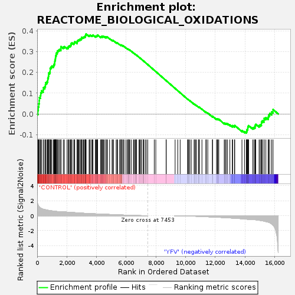
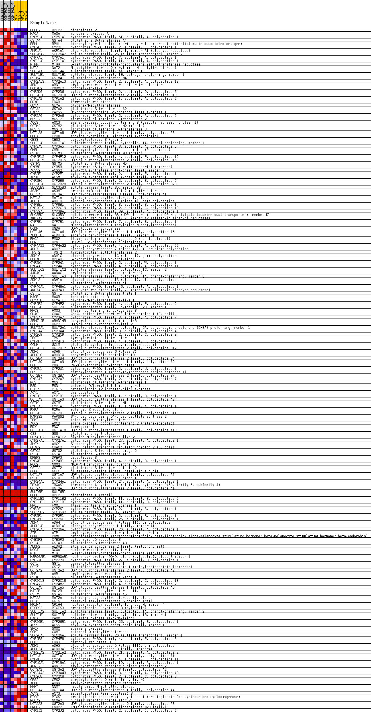
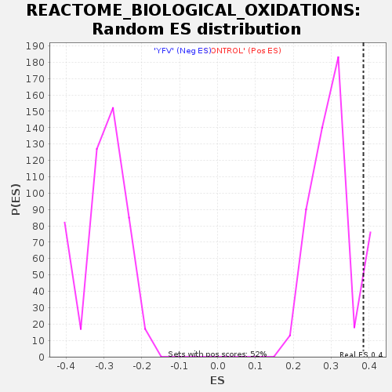

| Dataset | MATRIZ_GSE99081_collapsed_to_symbols.gsea_CLASE_99081.cls#CONTROL_versus_YFV |
| Phenotype | gsea_CLASE_99081.cls#CONTROL_versus_YFV |
| Upregulated in class | CONTROL |
| GeneSet | REACTOME_BIOLOGICAL_OXIDATIONS |
| Enrichment Score (ES) | 0.38552755 |
| Normalized Enrichment Score (NES) | 1.272781 |
| Nominal p-value | 0.07884616 |
| FDR q-value | 0.9330104 |
| FWER p-Value | 1.0 |

| SYMBOL | TITLE | RANK IN GENE LIST | RANK METRIC SCORE | RUNNING ES | CORE ENRICHMENT | |
|---|---|---|---|---|---|---|
| 1 | DPEP2 | dipeptidase 2 | 51 | 1.476 | 0.0169 | Yes |
| 2 | MAOA | monoamine oxidase A | 76 | 1.382 | 0.0342 | Yes |
| 3 | CYP51A1 | cytochrome P450, family 51, subfamily A, polypeptide 1 | 109 | 1.259 | 0.0494 | Yes |
| 4 | GSTA4 | glutathione S-transferase A4 | 136 | 1.188 | 0.0639 | Yes |
| 5 | BPHL | biphenyl hydrolase-like (serine hydrolase; breast epithelial mucin-associated antigen) | 144 | 1.175 | 0.0795 | Yes |
| 6 | CYP2E1 | cytochrome P450, family 2, subfamily E, polypeptide 1 | 218 | 1.036 | 0.0890 | Yes |
| 7 | AKR1A1 | aldo-keto reductase family 1, member A1 (aldehyde reductase) | 240 | 1.009 | 0.1015 | Yes |
| 8 | SLC26A2 | solute carrier family 26 (sulfate transporter), member 2 | 288 | 0.960 | 0.1116 | Yes |
| 9 | CYP7A1 | cytochrome P450, family 7, subfamily A, polypeptide 1 | 406 | 0.872 | 0.1162 | Yes |
| 10 | CYP11A1 | cytochrome P450, family 11, subfamily A, polypeptide 1 | 421 | 0.864 | 0.1270 | Yes |
| 11 | MTRR | 5-methyltetrahydrofolate-homocysteine methyltransferase reductase | 518 | 0.823 | 0.1323 | Yes |
| 12 | NAT2 | N-acetyltransferase 2 (arylamine N-acetyltransferase) | 557 | 0.801 | 0.1408 | Yes |
| 13 | SULT4A1 | sulfotransferase family 4A, member 1 | 571 | 0.794 | 0.1508 | Yes |
| 14 | SULT1E1 | sulfotransferase family 1E, estrogen-preferring, member 1 | 661 | 0.759 | 0.1556 | Yes |
| 15 | GSTM4 | glutathione S-transferase M4 | 710 | 0.739 | 0.1626 | Yes |
| 16 | CYP2A13 | cytochrome P450, family 2, subfamily A, polypeptide 13 | 716 | 0.735 | 0.1723 | Yes |
| 17 | ARNT | aryl hydrocarbon receptor nuclear translocator | 755 | 0.718 | 0.1797 | Yes |
| 18 | PODXL2 | podocalyxin-like 2 | 775 | 0.710 | 0.1882 | Yes |
| 19 | CYP2D6 | cytochrome P450, family 2, subfamily D, polypeptide 6 | 781 | 0.708 | 0.1975 | Yes |
| 20 | UGT2B10 | UDP glucuronosyltransferase 2 family, polypeptide B10 | 849 | 0.689 | 0.2027 | Yes |
| 21 | CYP1A2 | cytochrome P450, family 1, subfamily A, polypeptide 2 | 873 | 0.681 | 0.2106 | Yes |
| 22 | FDXR | ferredoxin reductase | 874 | 0.680 | 0.2198 | Yes |
| 23 | GLYAT | glycine-N-acyltransferase | 926 | 0.667 | 0.2257 | Yes |
| 24 | GSTA2 | glutathione S-transferase A2 | 989 | 0.647 | 0.2307 | Yes |
| 25 | PAPSS1 | 3'-phosphoadenosine 5'-phosphosulfate synthase 1 | 1099 | 0.618 | 0.2323 | Yes |
| 26 | CYP2A6 | cytochrome P450, family 2, subfamily A, polypeptide 6 | 1129 | 0.613 | 0.2388 | Yes |
| 27 | MGST2 | microsomal glutathione S-transferase 2 | 1175 | 0.601 | 0.2442 | Yes |
| 28 | AOC3 | amine oxidase, copper containing 3 (vascular adhesion protein 1) | 1182 | 0.599 | 0.2520 | Yes |
| 29 | GSTM2 | glutathione S-transferase M2 (muscle) | 1195 | 0.594 | 0.2593 | Yes |
| 30 | MGST3 | microsomal glutathione S-transferase 3 | 1227 | 0.590 | 0.2654 | Yes |
| 31 | UGT1A8 | UDP glucuronosyltransferase 1 family, polypeptide A8 | 1237 | 0.588 | 0.2729 | Yes |
| 32 | EPHX1 | epoxide hydrolase 1, microsomal (xenobiotic) | 1245 | 0.586 | 0.2804 | Yes |
| 33 | CES3 | carboxylesterase 3 (brain) | 1281 | 0.576 | 0.2861 | Yes |
| 34 | SULT1A1 | sulfotransferase family, cytosolic, 1A, phenol-preferring, member 1 | 1293 | 0.573 | 0.2932 | Yes |
| 35 | CYP3A5 | cytochrome P450, family 3, subfamily A, polypeptide 5 | 1355 | 0.560 | 0.2970 | Yes |
| 36 | CMBL | carboxymethylenebutenolidase homolog (Pseudomonas) | 1367 | 0.557 | 0.3039 | Yes |
| 37 | GSTM3 | glutathione S-transferase M3 (brain) | 1435 | 0.543 | 0.3071 | Yes |
| 38 | CYP4F12 | cytochrome P450, family 4, subfamily F, polypeptide 12 | 1500 | 0.530 | 0.3103 | Yes |
| 39 | UGT2B15 | UDP glucuronosyltransferase 2 family, polypeptide B15 | 1594 | 0.510 | 0.3115 | Yes |
| 40 | GSTM5 | glutathione S-transferase M5 | 1600 | 0.508 | 0.3181 | Yes |
| 41 | CYB5B | cytochrome b5 type B (outer mitochondrial membrane) | 1606 | 0.508 | 0.3247 | Yes |
| 42 | ACSS2 | acyl-CoA synthetase short-chain family member 2 | 1760 | 0.500 | 0.3220 | Yes |
| 43 | CYP2F1 | cytochrome P450, family 2, subfamily F, polypeptide 1 | 1833 | 0.500 | 0.3243 | Yes |
| 44 | ACSM1 | acyl-CoA synthetase medium-chain family member 1 | 2013 | 0.482 | 0.3197 | Yes |
| 45 | CYP2B6 | cytochrome P450, family 2, subfamily B, polypeptide 6 | 2094 | 0.469 | 0.3211 | Yes |
| 46 | UGT2B28 | UDP glucuronosyltransferase 2 family, polypeptide B28 | 2112 | 0.466 | 0.3264 | Yes |
| 47 | SLC35B3 | solute carrier family 35, member B3 | 2184 | 0.458 | 0.3282 | Yes |
| 48 | AS3MT | arsenic (+3 oxidation state) methyltransferase | 2251 | 0.448 | 0.3301 | Yes |
| 49 | UGT3A1 | UDP glycosyltransferase 3 family, polypeptide A1 | 2283 | 0.443 | 0.3342 | Yes |
| 50 | MAT1A | methionine adenosyltransferase I, alpha | 2288 | 0.443 | 0.3400 | Yes |
| 51 | ADH1B | alcohol dehydrogenase IB (class I), beta polypeptide | 2348 | 0.433 | 0.3422 | Yes |
| 52 | CYP8B1 | cytochrome P450, family 8, subfamily B, polypeptide 1 | 2467 | 0.417 | 0.3406 | Yes |
| 53 | CYP2C19 | cytochrome P450, family 2, subfamily C, polypeptide 19 | 2506 | 0.412 | 0.3438 | Yes |
| 54 | CYP39A1 | cytochrome P450, family 39, subfamily A, polypeptide 1 | 2529 | 0.409 | 0.3480 | Yes |
| 55 | SLC35D1 | solute carrier family 35 (UDP-glucuronic acid/UDP-N-acetylgalactosamine dual transporter), member D1 | 2684 | 0.385 | 0.3436 | Yes |
| 56 | AKR7A2 | aldo-keto reductase family 7, member A2 (aflatoxin aldehyde reductase) | 2691 | 0.384 | 0.3485 | Yes |
| 57 | CYP7B1 | cytochrome P450, family 7, subfamily B, polypeptide 1 | 2708 | 0.382 | 0.3527 | Yes |
| 58 | NAT1 | N-acetyltransferase 1 (arylamine N-acetyltransferase) | 2757 | 0.373 | 0.3548 | Yes |
| 59 | UGDH | UDP-glucose dehydrogenase | 2803 | 0.366 | 0.3570 | Yes |
| 60 | UGT1A6 | UDP glucuronosyltransferase 1 family, polypeptide A6 | 2872 | 0.357 | 0.3576 | Yes |
| 61 | ALDH1B1 | aldehyde dehydrogenase 1 family, member B1 | 2895 | 0.353 | 0.3610 | Yes |
| 62 | FMO2 | flavin containing monooxygenase 2 (non-functional) | 2970 | 0.346 | 0.3611 | Yes |
| 63 | BPNT1 | 3'(2'), 5'-bisphosphate nucleotidase 1 | 2986 | 0.344 | 0.3649 | Yes |
| 64 | CYP4A22 | cytochrome P450, family 4, subfamily A, polypeptide 22 | 2990 | 0.344 | 0.3694 | Yes |
| 65 | ADH7 | alcohol dehydrogenase 7 (class IV), mu or sigma polypeptide | 3075 | 0.334 | 0.3687 | Yes |
| 66 | TPST2 | tyrosylprotein sulfotransferase 2 | 3132 | 0.328 | 0.3696 | Yes |
| 67 | ADH1C | alcohol dehydrogenase 1C (class I), gamma polypeptide | 3174 | 0.323 | 0.3715 | Yes |
| 68 | OPLAH | 5-oxoprolinase (ATP-hydrolysing) | 3233 | 0.317 | 0.3722 | Yes |
| 69 | CYP2W1 | cytochrome P450, family 2, subfamily W, polypeptide 1 | 3244 | 0.315 | 0.3758 | Yes |
| 70 | CYP4A11 | cytochrome P450, family 4, subfamily A, polypeptide 11 | 3263 | 0.314 | 0.3790 | Yes |
| 71 | SULT1C2 | sulfotransferase family, cytosolic, 1C, member 2 | 3275 | 0.313 | 0.3826 | Yes |
| 72 | AADAC | arylacetamide deacetylase (esterase) | 3296 | 0.310 | 0.3855 | Yes |
| 73 | SULT1A3 | sulfotransferase family, cytosolic, 1A, phenol-preferring, member 3 | 3498 | 0.289 | 0.3769 | No |
| 74 | ADH1A | alcohol dehydrogenase 1A (class I), alpha polypeptide | 3544 | 0.284 | 0.3780 | No |
| 75 | GSTP1 | glutathione S-transferase pi | 3572 | 0.281 | 0.3801 | No |
| 76 | CYP46A1 | cytochrome P450, family 46, subfamily A, polypeptide 1 | 3681 | 0.268 | 0.3771 | No |
| 77 | AKR7A3 | aldo-keto reductase family 7, member A3 (aflatoxin aldehyde reductase) | 3727 | 0.264 | 0.3778 | No |
| 78 | GSTT1 | glutathione S-transferase theta 1 | 3758 | 0.261 | 0.3795 | No |
| 79 | MAOB | monoamine oxidase B | 3916 | 0.249 | 0.3731 | No |
| 80 | GLYATL1 | glycine-N-acyltransferase-like 1 | 3941 | 0.247 | 0.3750 | No |
| 81 | CYP4F2 | cytochrome P450, family 4, subfamily F, polypeptide 2 | 3998 | 0.243 | 0.3748 | No |
| 82 | SULT2B1 | sulfotransferase family, cytosolic, 2B, member 1 | 4029 | 0.241 | 0.3762 | No |
| 83 | FMO3 | flavin containing monooxygenase 3 | 4064 | 0.238 | 0.3773 | No |
| 84 | CHAC1 | ChaC, cation transport regulator homolog 1 (E. coli) | 4074 | 0.237 | 0.3800 | No |
| 85 | CYP3A7 | cytochrome P450, family 3, subfamily A, polypeptide 7 | 4281 | 0.222 | 0.3702 | No |
| 86 | ABHD14B | abhydrolase domain containing 14B | 4314 | 0.218 | 0.3712 | No |
| 87 | UGP2 | UDP-glucose pyrophosphorylase 2 | 4332 | 0.217 | 0.3731 | No |
| 88 | SULT2A1 | sulfotransferase family, cytosolic, 2A, dehydroepiandrosterone (DHEA)-preferring, member 1 | 4404 | 0.211 | 0.3715 | No |
| 89 | CYP3A4 | cytochrome P450, family 3, subfamily A, polypeptide 4 | 4409 | 0.211 | 0.3741 | No |
| 90 | CYP2C9 | cytochrome P450, family 2, subfamily C, polypeptide 9 | 4465 | 0.205 | 0.3735 | No |
| 91 | TPST1 | tyrosylprotein sulfotransferase 1 | 4530 | 0.200 | 0.3722 | No |
| 92 | CYP4F3 | cytochrome P450, family 4, subfamily F, polypeptide 3 | 4632 | 0.189 | 0.3685 | No |
| 93 | GCLM | glutamate-cysteine ligase, modifier subunit | 4633 | 0.189 | 0.3710 | No |
| 94 | UGT2B17 | UDP glucuronosyltransferase 2 family, polypeptide B17 | 4702 | 0.183 | 0.3693 | No |
| 95 | ADH6 | alcohol dehydrogenase 6 (class V) | 4728 | 0.181 | 0.3702 | No |
| 96 | ABHD10 | abhydrolase domain containing 10 | 4879 | 0.168 | 0.3631 | No |
| 97 | UGT2B4 | UDP glucuronosyltransferase 2 family, polypeptide B4 | 5045 | 0.155 | 0.3550 | No |
| 98 | UGT1A9 | UDP glucuronosyltransferase 1 family, polypeptide A9 | 5090 | 0.150 | 0.3542 | No |
| 99 | POR | P450 (cytochrome) oxidoreductase | 5137 | 0.145 | 0.3533 | No |
| 100 | CYP2U1 | cytochrome P450, family 2, subfamily U, polypeptide 1 | 5322 | 0.128 | 0.3436 | No |
| 101 | CES1 | carboxylesterase 1 (monocyte/macrophage serine esterase 1) | 5387 | 0.123 | 0.3413 | No |
| 102 | UGT2B7 | UDP glucuronosyltransferase 2 family, polypeptide B7 | 5411 | 0.120 | 0.3415 | No |
| 103 | CYP2A7 | cytochrome P450, family 2, subfamily A, polypeptide 7 | 5544 | 0.110 | 0.3348 | No |
| 104 | MGST1 | microsomal glutathione S-transferase 1 | 5627 | 0.104 | 0.3311 | No |
| 105 | ESD | esterase D/formylglutathione hydrolase | 5648 | 0.102 | 0.3312 | No |
| 106 | PTGIS | prostaglandin I2 (prostacyclin) synthase | 5655 | 0.102 | 0.3322 | No |
| 107 | ACY1 | aminoacylase 1 | 5677 | 0.100 | 0.3323 | No |
| 108 | CYP1B1 | cytochrome P450, family 1, subfamily B, polypeptide 1 | 5768 | 0.093 | 0.3279 | No |
| 109 | UGT1A3 | UDP glucuronosyltransferase 1 family, polypeptide A3 | 5788 | 0.091 | 0.3280 | No |
| 110 | GSTM1 | glutathione S-transferase M1 | 5851 | 0.088 | 0.3253 | No |
| 111 | CYP1A1 | cytochrome P450, family 1, subfamily A, polypeptide 1 | 5982 | 0.077 | 0.3183 | No |
| 112 | RXRA | retinoid X receptor, alpha | 6077 | 0.070 | 0.3134 | No |
| 113 | UGT2B11 | UDP glucuronosyltransferase 2 family, polypeptide B11 | 6128 | 0.066 | 0.3112 | No |
| 114 | PAPSS2 | 3'-phosphoadenosine 5'-phosphosulfate synthase 2 | 6143 | 0.065 | 0.3112 | No |
| 115 | TPMT | thiopurine S-methyltransferase | 6152 | 0.064 | 0.3115 | No |
| 116 | AOC2 | amine oxidase, copper containing 2 (retina-specific) | 6226 | 0.059 | 0.3078 | No |
| 117 | FDX1 | ferredoxin 1 | 6249 | 0.057 | 0.3072 | No |
| 118 | UGT1A10 | UDP glucuronosyltransferase 1 family, polypeptide A10 | 6359 | 0.049 | 0.3011 | No |
| 119 | GSS | glutathione synthetase | 6499 | 0.038 | 0.2929 | No |
| 120 | GLYATL2 | glycine-N-acyltransferase-like 2 | 6535 | 0.036 | 0.2912 | No |
| 121 | CYP27A1 | cytochrome P450, family 27, subfamily A, polypeptide 1 | 6610 | 0.032 | 0.2870 | No |
| 122 | AHCY | S-adenosylhomocysteine hydrolase | 6657 | 0.029 | 0.2846 | No |
| 123 | CHAC2 | ChaC, cation transport regulator homolog 2 (E. coli) | 6672 | 0.028 | 0.2841 | No |
| 124 | GSTO2 | glutathione S-transferase omega 2 | 6682 | 0.027 | 0.2839 | No |
| 125 | GSTA1 | glutathione S-transferase A1 | 6864 | 0.017 | 0.2728 | No |
| 126 | DPEP3 | dipeptidase 3 | 6896 | 0.016 | 0.2711 | No |
| 127 | CYP4B1 | cytochrome P450, family 4, subfamily B, polypeptide 1 | 6961 | 0.013 | 0.2673 | No |
| 128 | NQO2 | NAD(P)H dehydrogenase, quinone 2 | 7014 | 0.010 | 0.2642 | No |
| 129 | GSTT2 | glutathione S-transferase theta 2 | 7132 | 0.004 | 0.2570 | No |
| 130 | GCLC | glutamate-cysteine ligase, catalytic subunit | 7134 | 0.004 | 0.2569 | No |
| 131 | UGT1A7 | UDP glucuronosyltransferase 1 family, polypeptide A7 | 7143 | 0.004 | 0.2565 | No |
| 132 | GSTO1 | glutathione S-transferase omega 1 | 7166 | 0.002 | 0.2551 | No |
| 133 | CYP24A1 | cytochrome P450, family 24, subfamily A, polypeptide 1 | 7269 | 0.000 | 0.2488 | No |
| 134 | TBXAS1 | thromboxane A synthase 1 (platelet, cytochrome P450, family 5, subfamily A) | 7349 | 0.000 | 0.2439 | No |
| 135 | UGT2A1 | UDP glucuronosyltransferase 2 family, polypeptide A1 | 7449 | 0.000 | 0.2377 | No |
| 136 | SULT6B1 | - | 7888 | 0.000 | 0.2104 | No |
| 137 | DPEP1 | dipeptidase 1 (renal) | 7991 | 0.000 | 0.2040 | No |
| 138 | CYP11B2 | cytochrome P450, family 11, subfamily B, polypeptide 2 | 8690 | 0.000 | 0.1605 | No |
| 139 | CYP11B1 | cytochrome P450, family 11, subfamily B, polypeptide 1 | 8691 | 0.000 | 0.1605 | No |
| 140 | FMO1 | flavin containing monooxygenase 1 | 9293 | -0.000 | 0.1230 | No |
| 141 | CYP2S1 | cytochrome P450, family 2, subfamily S, polypeptide 1 | 9470 | -0.001 | 0.1121 | No |
| 142 | SLC35B2 | solute carrier family 35, member B2 | 9632 | -0.009 | 0.1022 | No |
| 143 | CYP2R1 | cytochrome P450, family 2, subfamily R, polypeptide 1 | 10135 | -0.032 | 0.0713 | No |
| 144 | CYP26C1 | cytochrome P450, family 26, subfamily C, polypeptide 1 | 10160 | -0.034 | 0.0703 | No |
| 145 | ADH4 | alcohol dehydrogenase 4 (class II), pi polypeptide | 10206 | -0.038 | 0.0680 | No |
| 146 | ALDH1A1 | aldehyde dehydrogenase 1 family, member A1 | 10281 | -0.043 | 0.0640 | No |
| 147 | CYP26A1 | cytochrome P450, family 26, subfamily A, polypeptide 1 | 10377 | -0.050 | 0.0587 | No |
| 148 | AIP | aryl hydrocarbon receptor interacting protein | 10573 | -0.066 | 0.0474 | No |
| 149 | POMC | proopiomelanocortin (adrenocorticotropin/ beta-lipotropin/ alpha-melanocyte stimulating hormone/ beta-melanocyte stimulating hormone/ beta-endorphin) | 10601 | -0.068 | 0.0467 | No |
| 150 | CYB5R3 | cytochrome b5 reductase 3 | 10672 | -0.073 | 0.0433 | No |
| 151 | GSTA3 | glutathione S-transferase A3 | 10736 | -0.079 | 0.0404 | No |
| 152 | ALDH2 | aldehyde dehydrogenase 2 family (mitochondrial) | 10874 | -0.091 | 0.0331 | No |
| 153 | NCOA1 | nuclear receptor coactivator 1 | 10884 | -0.092 | 0.0338 | No |
| 154 | MTR | 5-methyltetrahydrofolate-homocysteine methyltransferase | 10933 | -0.096 | 0.0321 | No |
| 155 | HSP90AB1 | heat shock protein 90kDa alpha (cytosolic), class B member 1 | 11100 | -0.110 | 0.0233 | No |
| 156 | CYP27B1 | cytochrome P450, family 27, subfamily B, polypeptide 1 | 11366 | -0.135 | 0.0086 | No |
| 157 | GGT1 | gamma-glutamyltransferase 1 | 11395 | -0.138 | 0.0087 | No |
| 158 | GSTZ1 | glutathione transferase zeta 1 (maleylacetoacetate isomerase) | 11494 | -0.147 | 0.0046 | No |
| 159 | UGT2A2 | UDP glucuronosyltransferase 2 family, polypeptide A2 | 11805 | -0.175 | -0.0123 | No |
| 160 | AHR | aryl hydrocarbon receptor | 11816 | -0.176 | -0.0105 | No |
| 161 | GSTK1 | glutathione S-transferase kappa 1 | 12084 | -0.201 | -0.0245 | No |
| 162 | CYP2C18 | cytochrome P450, family 2, subfamily C, polypeptide 18 | 12136 | -0.207 | -0.0248 | No |
| 163 | CYP4V2 | cytochrome P450, family 4, subfamily V, polypeptide 2 | 12171 | -0.211 | -0.0241 | No |
| 164 | UGT1A5 | UDP glucuronosyltransferase 1 family, polypeptide A5 | 12236 | -0.218 | -0.0251 | No |
| 165 | MAT2B | methionine adenosyltransferase II, beta | 12602 | -0.254 | -0.0444 | No |
| 166 | GSTA5 | glutathione S-transferase A5 | 12668 | -0.261 | -0.0449 | No |
| 167 | MAT2A | methionine adenosyltransferase II, alpha | 12733 | -0.269 | -0.0452 | No |
| 168 | GGT6 | gamma-glutamyltransferase 6 homolog (rat) | 12822 | -0.280 | -0.0469 | No |
| 169 | NR1H4 | nuclear receptor subfamily 1, group H, member 4 | 12981 | -0.298 | -0.0527 | No |
| 170 | PTGES3 | prostaglandin E synthase 3 (cytosolic) | 13147 | -0.320 | -0.0586 | No |
| 171 | SULT1A2 | sulfotransferase family, cytosolic, 1A, phenol-preferring, member 2 | 13170 | -0.324 | -0.0556 | No |
| 172 | SULT1B1 | sulfotransferase family, cytosolic, 1B, member 1 | 13293 | -0.338 | -0.0586 | No |
| 173 | PAOX | polyamine oxidase (exo-N4-amino) | 13310 | -0.340 | -0.0550 | No |
| 174 | CYP26B1 | cytochrome P450, family 26, subfamily B, polypeptide 1 | 13795 | -0.410 | -0.0795 | No |
| 175 | ACSS1 | acyl-CoA synthetase short-chain family member 1 | 13976 | -0.437 | -0.0848 | No |
| 176 | SMOX | spermine oxidase | 14092 | -0.460 | -0.0857 | No |
| 177 | COMT | catechol-O-methyltransferase | 14122 | -0.467 | -0.0812 | No |
| 178 | SLC26A1 | solute carrier family 26 (sulfate transporter), member 1 | 14128 | -0.467 | -0.0751 | No |
| 179 | CYP4F8 | cytochrome P450, family 4, subfamily F, polypeptide 8 | 14181 | -0.479 | -0.0718 | No |
| 180 | CBR3 | carbonyl reductase 3 | 14190 | -0.480 | -0.0658 | No |
| 181 | ADH5 | alcohol dehydrogenase 5 (class III), chi polypeptide | 14196 | -0.481 | -0.0596 | No |
| 182 | ALDH3A1 | aldehyde dehydrogenase 3 family, memberA1 | 14247 | -0.491 | -0.0560 | No |
| 183 | CYP21A2 | cytochrome P450, family 21, subfamily A, polypeptide 2 | 14521 | -0.500 | -0.0662 | No |
| 184 | UGT1A1 | UDP glucuronosyltransferase 1 family, polypeptide A1 | 14608 | -0.518 | -0.0645 | No |
| 185 | CYP4F11 | cytochrome P450, family 4, subfamily F, polypeptide 11 | 14679 | -0.536 | -0.0616 | No |
| 186 | CYP19A1 | cytochrome P450, family 19, subfamily A, polypeptide 1 | 14682 | -0.537 | -0.0544 | No |
| 187 | ARNT2 | aryl-hydrocarbon receptor nuclear translocator 2 | 14725 | -0.547 | -0.0496 | No |
| 188 | UGT3A2 | UDP glycosyltransferase 3 family, polypeptide A2 | 14949 | -0.607 | -0.0552 | No |
| 189 | CYP3A43 | cytochrome P450, family 3, subfamily A, polypeptide 43 | 15024 | -0.631 | -0.0512 | No |
| 190 | CYP2C8 | cytochrome P450, family 2, subfamily C, polypeptide 8 | 15107 | -0.655 | -0.0474 | No |
| 191 | CES2 | carboxylesterase 2 (intestine, liver) | 15109 | -0.656 | -0.0386 | No |
| 192 | AHRR | aryl-hydrocarbon receptor repressor | 15163 | -0.675 | -0.0327 | No |
| 193 | NNMT | nicotinamide N-methyltransferase | 15277 | -0.727 | -0.0298 | No |
| 194 | UGT1A4 | UDP glucuronosyltransferase 1 family, polypeptide A4 | 15290 | -0.733 | -0.0206 | No |
| 195 | ACY3 | aspartoacylase (aminocyclase) 3 | 15406 | -0.788 | -0.0171 | No |
| 196 | PTGS1 | prostaglandin-endoperoxide synthase 1 (prostaglandin G/H synthase and cyclooxygenase) | 15562 | -0.862 | -0.0150 | No |
| 197 | NCOA2 | nuclear receptor coactivator 2 | 15592 | -0.868 | -0.0050 | No |
| 198 | UGT2A3 | UDP glucuronosyltransferase 2 family, polypeptide A3 | 15666 | -0.937 | 0.0032 | No |
| 199 | CNDP2 | CNDP dipeptidase 2 (metallopeptidase M20 family) | 15796 | -1.107 | 0.0103 | No |
| 200 | CYP2J2 | cytochrome P450, family 2, subfamily J, polypeptide 2 | 15889 | -1.271 | 0.0218 | No |

